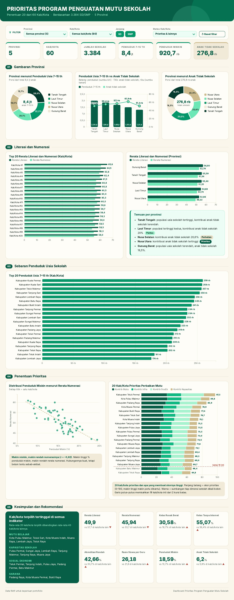

Data CleaningLooker StudioDashboard Interaktif
Dashboard Prioritas Program Penguatan Mutu Sekolah
Menentukan 20 dari 60 kab/kota prioritas berdasarkan data 3.384 SD/SMP di 5 provinsi, dengan skor prioritas dari 4 dimensi: mutu belajar, sarana, sosial ekonomi, dan kapasitas sekolah. Temuan: makin tinggi persentase penduduk miskin, makin rendah numerasi (r = −0,82), dan kab/kota terpilih tertinggal di semua indikator.
Lihat dashboard →Data fiktif • 2026